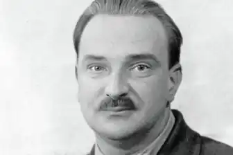
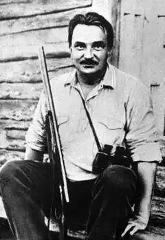

Біанкі Віталій Валентинович (1894-1959)
Все саме цікаве, незвичайне і звичайне, що відбувалося в природі кожен місяць і день, потрапило на сторінки "Лісової газети". Тут можна було знайти оголошення скворцов "Шукаємо квартири" або повідомлення про першому "ку-ку", що прозвучало в парку, чи відгук про спектаклі, який давали на тихому лісовому озері птиці-чомги.
Віталій Біанкі народився в Петербурзі. Співуча прізвище дісталася йому від предків-італійців. Можливо, від них же і захоплива, артистична натура. Від батька — вченого-орнітолога — талант дослідника і інтерес до всього, "що дихає, цвіте і росте". Батько працював у Зоологічному музеї Російської Академії наук. Квартира зберігача колекцій знаходилася прямо навпроти музею, і діти — троє синів — часто бували в його залах. Там за скляними вітринами завмерли тварини, привезені зі всієї земної кулі. Як хотілося знайти чарівне слово, яке "оживило" б музейних звірів. Справжні були вдома: в квартирі зберігача розташувався невеликий зоопарк. Влітку сім'я Біанкі виїжджала в село Леб'яже. Тут Вітя вперше відправився в даний лісове подорож. Було йому тоді років п'ять-шість. З тих пір ліс став для нього чарівною країною, раєм. Інтерес до лісового життя зробив його пристрасним мисливцем. Недарма перше рушницю йому подарували в 13 років. А ще він дуже любив поезію. У свій час захоплювався футболом, навіть входив у гімназійну команду. Різними були інтереси, таким же — освіта. Спочатку — гімназія, потім — факультет природничих наук в університеті, пізніше — заняття в інституті історії мистецтв. А своїм головним лісовим вчителем Біанкі вважав батька. Саме він привчив сина записувати всі спостереження. Через багато років вони перетворилися в захоплюючі розповіді та казки. Біанкі ніколи не приваблювали спостереження з вікна затишного кабінету. Все життя він багато подорожував (правда, не завжди з власної волі). Особливо запам'яталися походи по Алтаю. Біанкі тоді, на початку 20-х років, жив в Бійську, де викладав біологію в школі, працював у краєзнавчому музеї. Восени 1922-го Біанкі з родиною повернувся в Петроград. В ті роки в місті при одній з бібліотек існував цікавий літературний гурток, де збиралися письменники, які працювали для дітей. Сюди приходили Чуковський, Житков, Маршак. Маршак і одного разу привів з собою Віталія Біанкі. Незабаром у журналі "Воробей" було опубліковано його оповідання "Подорож червоноголового горобця". У тому ж 1923 році, вийшла перша книжка ("Чий ніс краще"). Найвідомішою книгою Біанкі стала "Лісова газета". Іншої подібної просто не було. Все саме цікаве, незвичайне і звичайне, що відбувалося в природі кожен місяць і день, потрапило на сторінки "Лісової газети". Тут можна було знайти оголошення скворцов "Шукаємо квартири" або повідомлення про першому "ку-ку", що прозвучало в парку, чи відгук про спектаклі, який давали на тихому лісовому озері птиці-чомги. Була навіть кримінальна хроніка: біда в лісі не рідкість. Книга "виросла" із невеликого журнального відділу. Біанкі працював над нею з 1924 року до кінця життя, постійно вносячи якісь зміни. З 1928 року вона кілька разів перевидавалась, ставала товщі, її перекладали на різні мови світу. Розповіді з "Лісової газети" звучали по радіо, друкувалися, поряд з іншими произведениямиБианки, на сторінках журналів і газет. Біанкі не тільки сам постійно працював над новими книгами (він автор понад трьохсот творів), йому вдалося зібрати навколо себе чудових людей, які любили і знали звірів і птахів. Він називав їх "перекладачами з безсловесного". Це були Н.Сладков,С. Сахарнов, Е. Шим. Біанкі допомагав їм у роботі над книгами. Разом вони вели одну з цікавих радіопередач "Вести з лісу". Тридцять п'ять років писав Біанкі про ліс. Це слово часто звучало в назвах його книг: "Лісові будиночки", "Лісові розвідники". Повісті, оповідання, казки Біанкі своєрідно поєднали в собі поезію і точне знання. Останні він навіть називав по-особливому: казки-несказки. У них немає чарівних паличок або чобіт-скороходів, але чудес там не менше. Про самому непоказному вороб'ї Біанкі міг розповісти, що ми тільки дивуємося: виявляється, той зовсім не простий. Вдалося-таки письменнику знайти чарівні слова, які "расколдовали" таємничий лісовий світ.